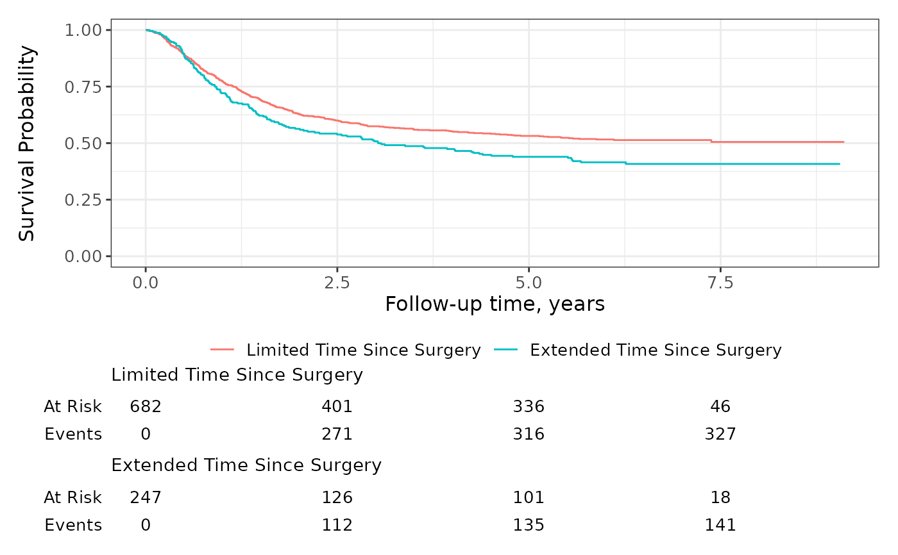

Function takes an object created with ggsurvfit() or ggcuminc() and
prepares the plot for printing.
If a plot also has a risk table, this function will build the risk table
plots and return them either as list of plots or combined
using patchwork::wrap_plots().
This can be particularly useful when you would like to place figures with risk tables side-by-side.
Arguments
- x
an object of class 'ggsurvfit' or 'ggcuminc'
- combine_plots
logical indicating whether to combine the primary plot and the risk tables. When
TRUE, plot and risk table(s) are combined withpatchwork::wrap_plots(). WhenFALSEand the plot has risk tables, they are returned in a list of gtable grobs. Default isTRUE.
See also
Visit the gallery for examples modifying the default figures
Examples
# construct plot
p <-
survfit2(Surv(time, status) ~ surg, df_colon) %>%
ggsurvfit() +
add_risktable() +
scale_y_continuous(limits = c(0, 1))
# build plots
built_p <- ggsurvfit_build(p, combine_plots = FALSE)
# reconstruct original figure print with risktables
patchwork::wrap_plots(
built_p[[1]],
built_p[[2]],
built_p[[3]],
ncol = 1,
heights = c(0.70, 0.15, 0.15)
)

# place plots side-by-side (plots must be built before placement with patchwork)
patchwork::wrap_plots(
ggsurvfit_build(p),
ggsurvfit_build(p),
ncol = 2
)